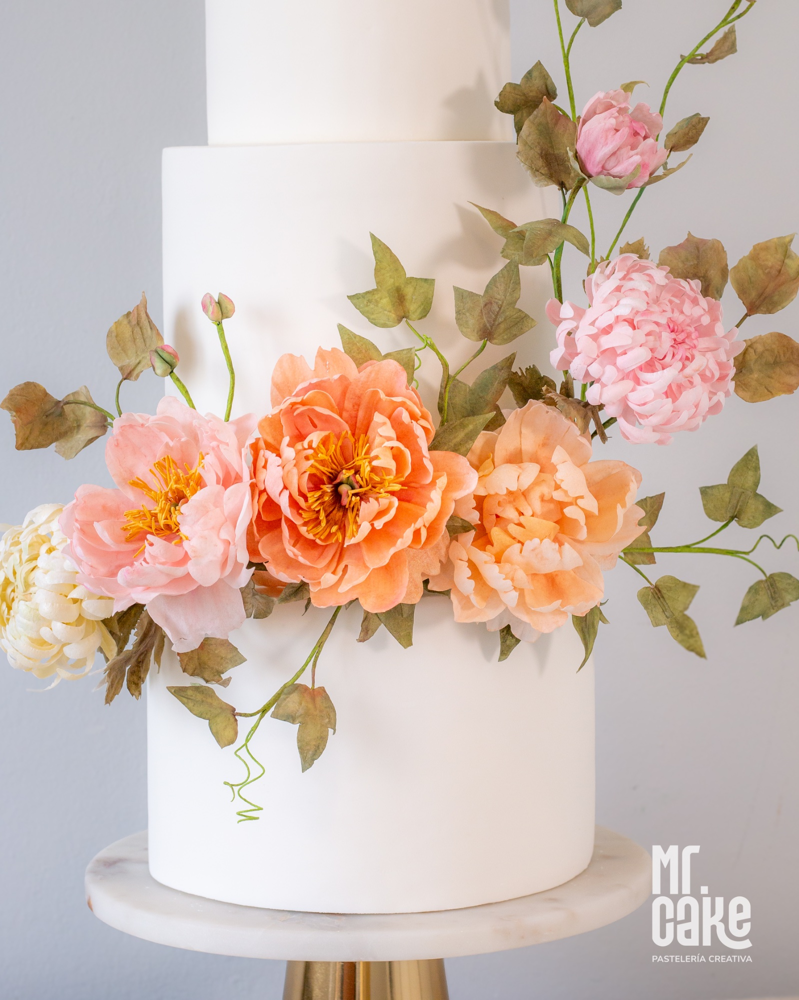
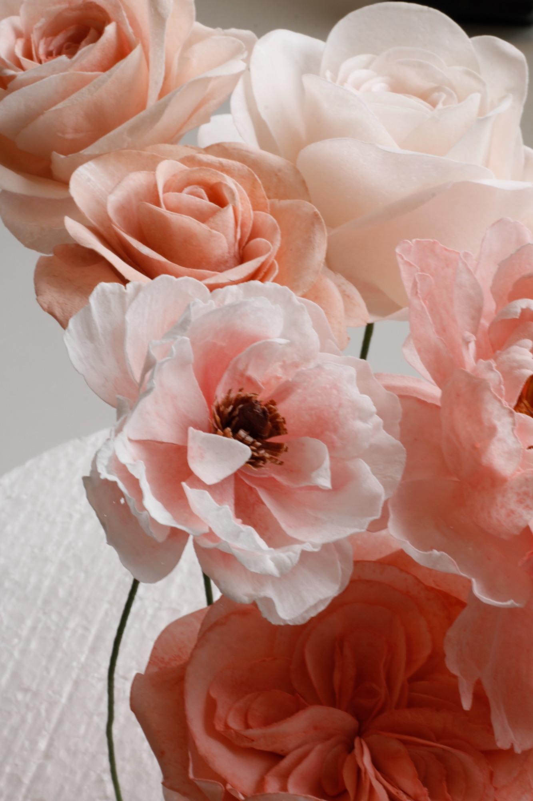
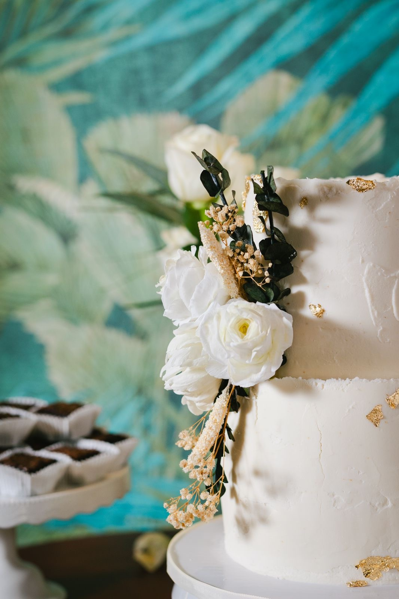

Some couples come to me with their flowers already decided. Same as the bouquet, same palette, same blooms — and that makes complete sense. Visual cohesion across a wedding is a design decision, and I respect it fully.
But there's a different kind of couple — one who comes with an emotion rather than a reference. A feeling they want the wedding to carry. And for those couples, the conversation about flowers becomes something else: a way of building meaning into the design from the inside out.
Either way, the flowers say something. The only question is whether the message is intentional.
A Brief History Worth Knowing
The practice of assigning meaning to flowers — known as floriography — has roots across multiple cultures, but much of what we recognize today was codified during the Victorian era, when open expressions of affection were socially constrained and flowers became a coded language between people who couldn't say what they felt out loud.
That history matters not because the Victorian rules still apply in the same way, but because those meanings are still culturally active. They persist in the flowers people choose for weddings, funerals, and anniversaries — often without knowing why those associations feel right.
The Flowers Most Brides Choose — and What They Mean
Rose
Red: deep romantic love. White: purity and new beginnings. Blush and dusty rose: admiration, grace, and gentle affection. The most universally understood flower — which is exactly why it's both the safest and the least surprising choice.
Peony
Prosperity, good fortune, and a happy marriage — across Chinese, Japanese, and Western traditions, the peony is one of the most auspicious flowers you can place on a wedding cake. Also the most seasonally constrained, which is where wafer paper becomes indispensable.
Orchid
Luxury, beauty, strength, and love. In many Asian cultures, orchids carry associations with abundance and fertility. For cascading arrangements and statement designs, few flowers have the structural drama of an orchid — in real or wafer form.
Gardenia
Joy, trust, purity, and the quiet intimacy shared between two people. A particular meaning in Japanese and Chinese traditions: the peace and closeness experienced only within a couple. Also one of the most physically delicate flowers to work with — real gardenias bruise if you look at them too hard.
Lavender
Love, virtue, devotion, and loyalty. Lavender works particularly well in mixed arrangements where visual weight needs to be balanced — it adds texture and color without competing for attention.
Chrysanthemum
In East Asian cultures: longevity and nobility. In many Latin American cultures: the flower of mourning. I personally love the chrysanthemum for its structure and drama. But I always have this conversation first.
The Conversation That Changes the Design

Peonies in coral, blush and ivory — all wafer paper, hand-crafted petal by petal. This exact palette doesn't exist in nature in December. It does here.
The chrysanthemum example is the clearest one, but it's not the only one. Daffodils — beautiful, bright, spring-forward — also carry an association with unrequited love that most people don't know about. The symbolism doesn't always align with the aesthetic.
For most couples, this doesn't change anything. They see a flower they love, and that's the end of the conversation — as it should be. But for some couples, knowing what a flower has historically meant changes how they feel about it. And that's worth knowing before the design is finalized rather than after.
A wedding cake is like the best wine in the world. The best wine is the one you love — because no matter how technically exceptional a bottle is, if it's not what you enjoy, it's not the right wine for you. The same is true here. If you love chrysanthemums, use them. Understanding their symbolism is a tool — not a veto. I'll never talk a couple out of a flower they love. But I'll always make sure they know what they're holding.


Left: wafer paper roses and ranunculus in blush and white. Right: white wafer roses with preserved foliage — a design where the restraint is intentional.
When the Design Starts With Meaning
There's a different kind of brief that I find genuinely exciting: the couple who wants the cake to carry an intention. Not just a color palette — a message. Flowers that represent good fortune entering the marriage. Blooms that symbolize the journey they took to get here. A design where every element, if someone asked, has an answer.
For those couples, the design process starts differently. We begin with what they want the cake to say — and build the visual language backward from there. The result is a piece that holds meaning even when no one is looking for it. Guests feel it without being able to name it.
Wafer paper changes what's possible
One of the practical advantages of working with wafer paper flowers is that seasonality disappears as a constraint. Peonies in December, gardenias without bruising, chrysanthemums in any tone you want — when the flowers are made by hand, the design can be exactly what it needs to be, regardless of what's in season.
The Short Version
The flowers on your wedding cake say something — whether you intend them to or not. Peonies for prosperity and a happy marriage, orchids for luxury and love, gardenias for trust and intimacy, lavender for devotion, roses for whatever your heart already knows.
Sometimes that symbolism aligns perfectly with what you want to say. Sometimes it opens a conversation that leads to a better design. Either way, the conversation is worth having before the sketch is finished.
Tell me what you love.
We'll figure out what it means.
Whether your flowers are decided or you're starting from an emotion — the design conversation starts here.
Begin Your Wedding Inquiry